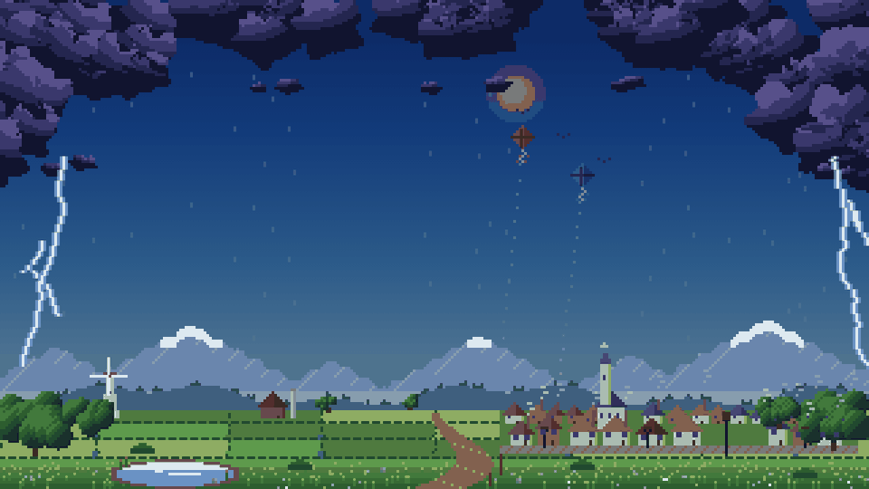
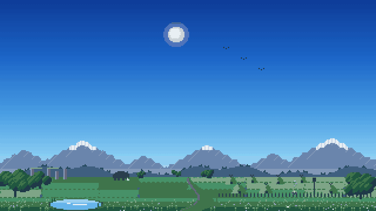
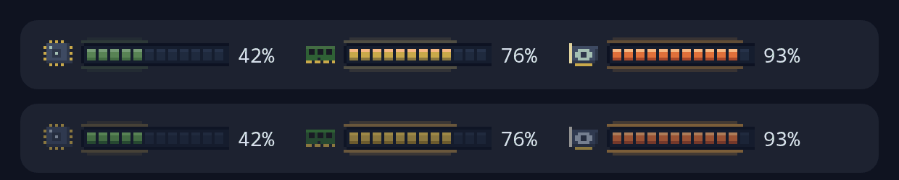

thinking-weather
A pixel valley behind the conversation. Storms while Claude works, lightning per tool call, and society advancing from the Stone Age to sci-fi as the context fills.
band above the promptsystem-monitor
Pixel-art CPU, RAM and GPU meters, lit for the time of day, with a detail pane on /sysmon.
turn-receipt
Time, tool calls, agents, files edited and tokens for every finished turn.
panepins
Pin the replies worth keeping into a pane you can open from the desktop or your phone.
A session you can read at a glance



Install
In the desktop app: + next to the prompt box, Plugins, Add marketplace with Guhan-SenSam/claude-terrarium, then Add plugin. From a shell:
claude plugin install thinking-weather --marketplace Guhan-SenSam/claude-terrarium claude plugin install system-monitor --marketplace Guhan-SenSam/claude-terrarium claude plugin install turn-receipt --marketplace Guhan-SenSam/claude-terrarium claude plugin install pins --marketplace Guhan-SenSam/claude-terrarium
The mods need a Claude Code with mods support; they are built and tested on 2.1.325. Backgrounds and the pixel band draw in the desktop app; the terminal shows the text parts.
Setting this up with an AI agent? Point it at For agents or llms.txt.
Privacy
Everything runs on your machine. The one exception is thinking-weather's real weather, off until you set a town: it then asks Open-Meteo for the weather every 30 minutes, sending the town's name once and afterwards only coordinates rounded to about 10 km.